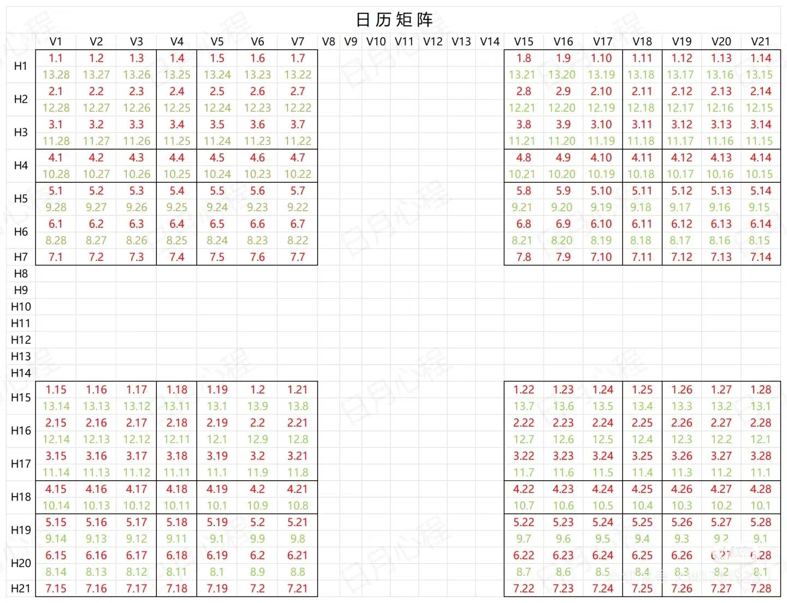
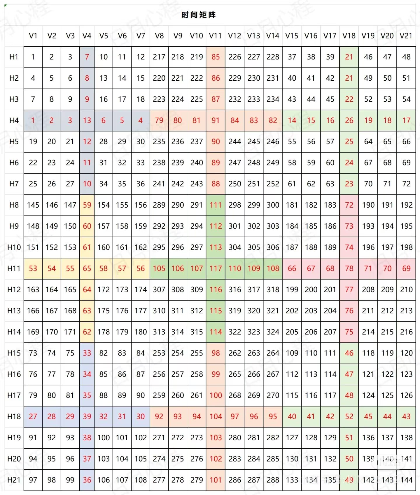
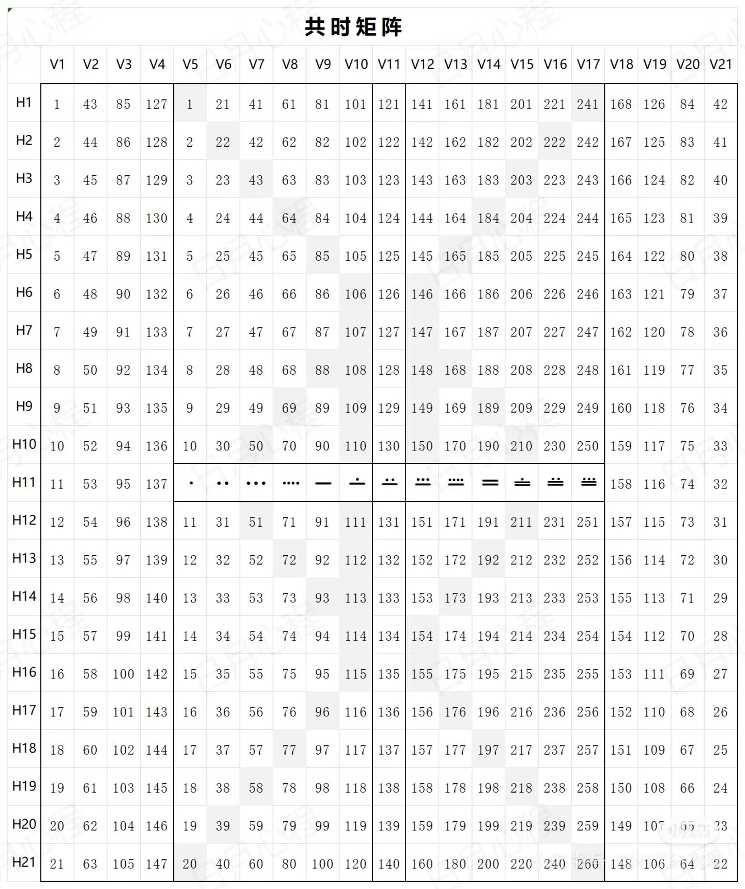
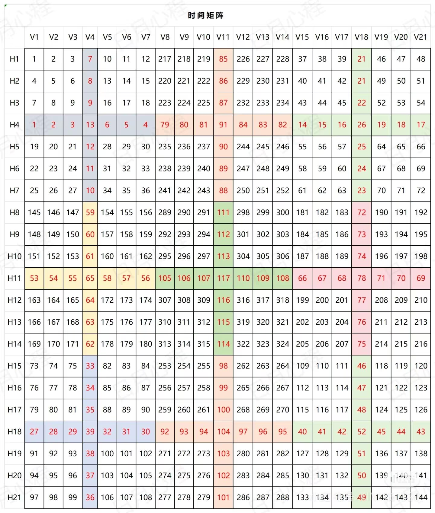
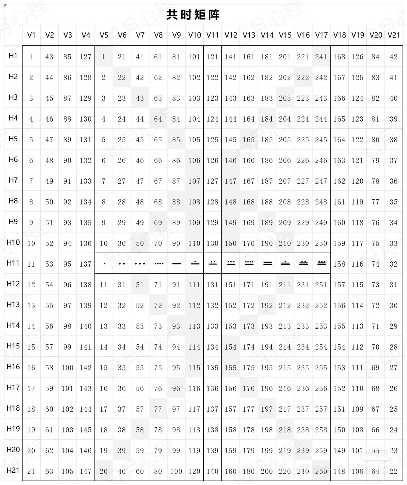
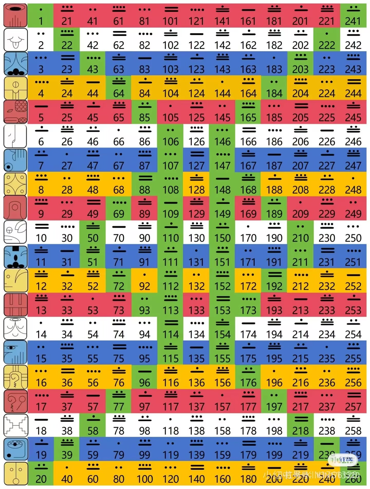

对等Kin查询
对等印记计算准备
A：要用到两张历法表
卓尔金历 十三月亮历
B：四张矩阵
日历矩阵 时间矩阵 空间矩阵 共时矩阵
总的来说就是从这六张图表中得出三个数字，然后把这三个数字相加的总和就是对等印记。
第一个数字查询
拿2025年4月19 （KIN26宇宙的白世界桥）来举例，4月19号对应的13月亮历是第10个月亮第16天，也就是10.16。

🌸接着从日历矩阵中找到10.16 对应坐标是：V20 H4
🌸 然后从空间、时间、共时三个矩阵图中找到坐标V20 H4对应的数字并相加。
 



空间68 + 时间18 + 共时81 = 167（这就是1号数字）
第二个数字查询
🌸在空间矩阵中找到本我图腾KIN值坐标，KIN26 对应的坐标：V5H7。然后从时间和共时两个矩阵中找到坐标对应的数字相加。
空间26 + 时间34 + 共时7 = 67（2号数字）
第三个数字查询
🌍在共时矩阵中找到本我图腾KIN值坐标，KIN26对应的坐标：V6H6。然后从空间和时间两个矩阵中找到坐标对应的数字相加
共时26 + 空间43 + 时间32 = 101（3号数字）
得出对等kin
🌍将3个数字相加，总和大于260，就减去260，直到小于260为止：167+67+101=335-260=75
KIN75根据卓尔金历表查询，对应行星的蓝鹰。

所以，KIN26宇宙的白桥 对等印记 KIN75行星的蓝鹰